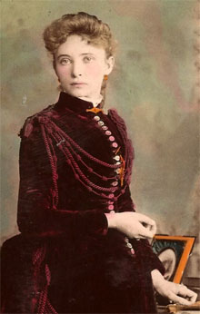
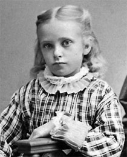
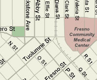

|
 |
|
Jessie Marie HelmJessie Marie Helm was born in Clovis, California on August 12, 1867. | |
| Important Facts | |
| August 12, 1867 | Jessie Marie Helm was born in Clovis, California. She is the daughter of William Helm and Francis S. Newman. |
 |
| 1870 | US Federal Census lists Wm. Helm (35), Fanny S. (29), Jess M. (3), George J. (1), Mary M. (3/12) living in Township 1, Fresno, California. | |
| November 19, 1885 | Jessie married Cary Stith Cox in Selma, California. They went to Selma in a carriage, where they were married by a minister of that place. Source: Fresno Republican Weekly (Fresno, California) Page: 3. | |
| 1885 | After a few weeks, Cox left Jessie to flee to Honolulu, Hawaii because his 1st wife was preparing to make trouble and prosecute him as a bigamist. Source: Fresno Republican Weekly (Fresno, California) Page: 3 | |
| January 22, 1886 | Jessie Cox commenced a suit for divorce from her husband, Carey S. Cox because she alleged in the complaint that he was the husband of another woman. Source: Fresno Republican Weekly (Fresno, California) Page: 3. | |
| October 7, 1887 | Jessie Helm married Cary Cox, a second time, at the Episcopal Church on Wednesday night. Source: Fresno Republican Weekly (Fresno, California) Page: 3 | |
| December 23, 1889 | Francis Maud Cox was born in San Francisco, California. | |
| February 21, 1891 | Agnes Jean Cox was born in Bakersfield, California. | |
| December 31, 1892 | Paul Helm Cox was born. | |
| June 11, 1900 | The US Census for Fresno lists Cary S. Cox (43), Jessie M. (32), Francis M. (11), Agnes J. (9), and Paul H. (7). Source 1900 US Census. |
|
| 1912 | William Helm deeded the 1248 R Street Fresno property to Jessie M. Cox. |  Fresno Street and |
| 1917 | The deed was notorized by William Helm and Frances Helm. | |
| April 10, 1919 | William Helm died at the home of his daughter. | |
| February 22, 1926 | Jessie wrote Agnes and Murray a letter about John's recent illness and how she felt that only Dr. Lawrence Maupin should be involved in any operation or treatment. She said "Dr. Maupin is the ony one I have confidence in and as I said before John means enough to me that I want him to have the best there is to be had." Source: Lettr from Jessie Helm Cox to Agnes and Murray Campbell. | |
| June 20, 1927 | Jessie wrote a letter to Agnes and Murray from Fresno about her sister Fannie and husband Ernest Warrond and the Henry Walrond family. Source: Lettr from Jessie Helm Cox to Agnes and Murray Campbell. | |
| April 4, 1930 | The 1930 US Census lists Jesie M. (62) and Cary S. Cox (72) living on R Street in Fresno, California. Source: 1930 US Census. | |
| The Helm home on Fresno Street is now the site of the Fresno Community Medical Center. | ||
| March 2, 1958 | Jessie died at 1423 Scenic Avenue in Berkeley, California. | |
| March 3, 1958 | The funeral was at the Berkeley Hills Chapel in Berkeley, California. |

Last updated: August 10, 2026